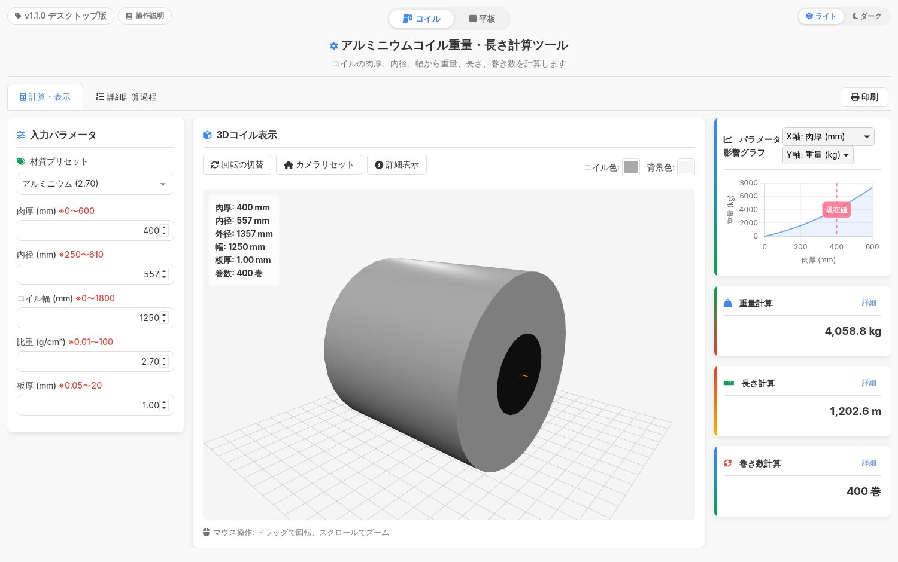
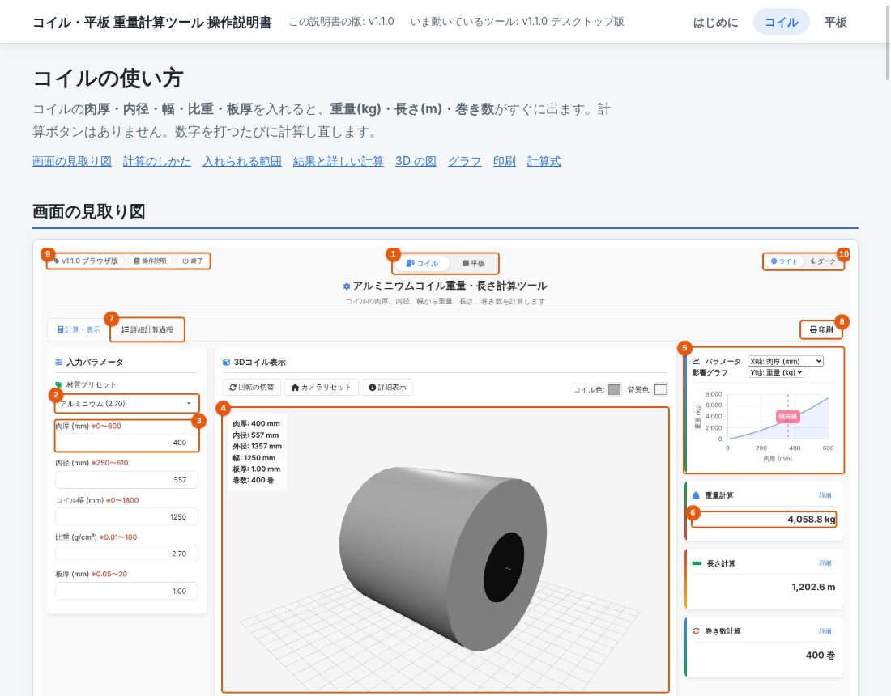
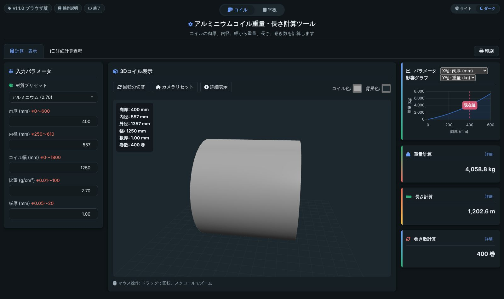
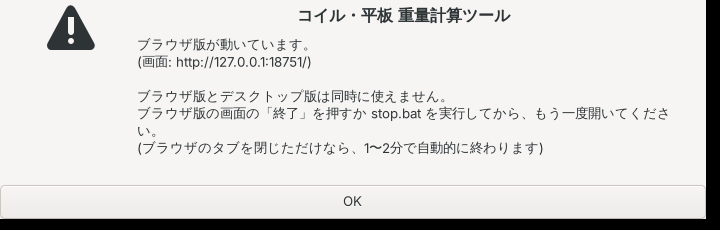
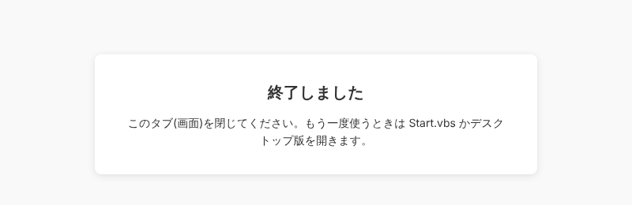
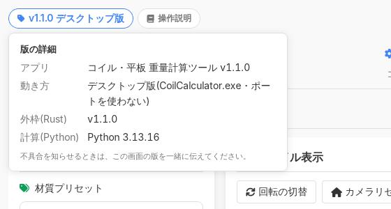
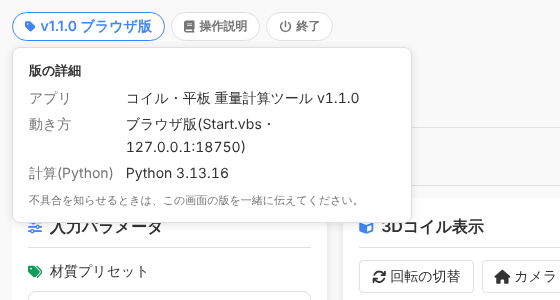
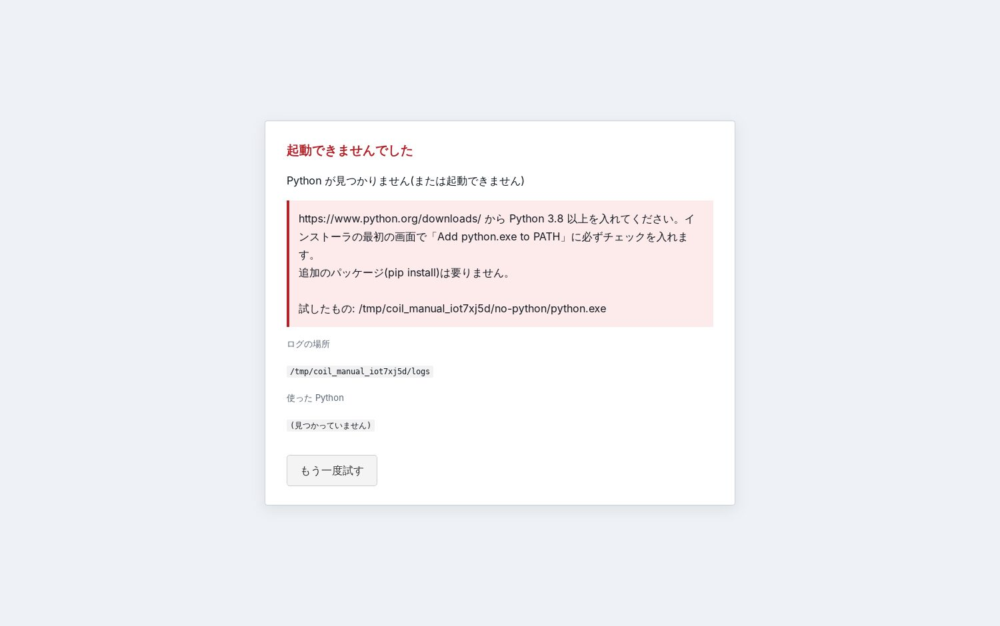

はじめに
コイルの肉厚・内径・幅・比重・板厚から重量・長さ・巻き数を、平板の寸法 A・B と板厚・比重から重量・面積・体積を計算するツールです。3D の図・グラフ・計算書の印刷もできます。
開き方
ふだんはデスクトップ版を使います。デスクトップ版が使えないときだけ、予備のブラウザ版を使います。計算の中身と結果はどちらも同じです。
| 版 | 開き方 | 閉じ方 |
|---|---|---|
| デスクトップ版(ふだん) | CoilCalculator.exe をダブルクリック | 窓の右上の × |
| ブラウザ版(予備) | Start.vbs をダブルクリック。既定のブラウザ(Edge など)で開きます | 画面の左上の「終了」 |

画面のつくり
いちばん上の真ん中でコイルと平板を切り替えます。左上は版と操作説明書、右上は背景(ライト / ダーク)の切替です。それぞれの画面の使い方は、次の頁にあります。


画面の左上の「操作説明」を押すと、いま見ている形状(コイルか平板)の説明書が開きます。デスクトップ版では別の窓、ブラウザ版では別のタブで開きます。


2つの版は同時に使えない
デスクトップ版とブラウザ版は、同時には動きません。後から開いたほうが、理由を知らせて止まります。先に開いているほうはそのまま使えます。
| 先に開いている | 後から開いた | どうなるか |
|---|---|---|
| ブラウザ版 | デスクトップ版 | 「ブラウザ版が動いています」と出て、デスクトップ版は開きません |
| デスクトップ版 | ブラウザ版 | 「デスクトップ版が開いています」と出て、ブラウザ版は開きません |
| デスクトップ版 | デスクトップ版 | 新しくは開かず、開いている窓が前に出ます |
| ブラウザ版 | ブラウザ版 | 新しくは開かず、動いている画面がブラウザで開きます |

終わり方
デスクトップ版
窓の右上の × で閉じます。計算の処理も一緒に終わります。説明書の窓が開いていても、計算の窓を閉じれば全部終わります。
ブラウザ版
画面の左上の「終了」を押し、確かめのメッセージで OK を押します。終わったら、ブラウザのタブを閉じてください。
止まらないときは、ツールのフォルダの stop.bat をダブルクリックします。

版の見方
画面の左上に、いま使っている版と、デスクトップ版かブラウザ版かが出ています。押すと詳しい中身が出ます。不具合を知らせるときは、この版を一緒に伝えてください。


| 項目 | 意味 |
|---|---|
| アプリ | このツールの版です。説明書の上の「この説明書の版」と同じなら、この説明書がそのまま当てはまります |
| 動き方 | デスクトップ版か、ブラウザ版か |
| 外枠(Rust) | デスクトップ版の窓を出している部分の版です(デスクトップ版のときだけ) |
| 計算(Python) | このPCに入っている Python の版です |
印刷した計算書のいちばん下にも、印刷したときの版が入ります。デスクトップ版の窓の題名(いちばん上の帯)にも版が出ます。
困ったとき
| こうなった | こうする |
|---|---|
| デスクトップ版を開くと「起動できませんでした」と出る | 出ている理由と「次にすること」に従います。多いのは Python が入っていないときです(下の図)。直るまではブラウザ版も同じ理由で使えないので、担当に連絡してください |
| 入力した欄が赤くなり、結果が変わらない | その欄の値が範囲の外です。欄の下に出ている範囲の中の値に直すと、すぐ計算されます(コイル / 平板) |
| 画面の上に赤い帯「計算の処理(Python)と繋がりません」が出る | ツールを閉じて開き直します。ブラウザ版なら Start.vbs をもう一度開きます |
| 「印刷」が押せない | 範囲の外の欄(赤い欄)があると印刷できません。直してから押してください |
| 3D の図のところに「3D表示を使えません」と出る | このPCの設定で 3D の機能が止められています。計算・グラフ・印刷はそのまま使えます |
| ブラウザ版が開かない | start.bat をダブルクリックすると、原因が黒い画面に出ます |

ログ(動作の記録)の場所: %LOCALAPPDATA%\CoilCalculator\logs\coilcalc.log